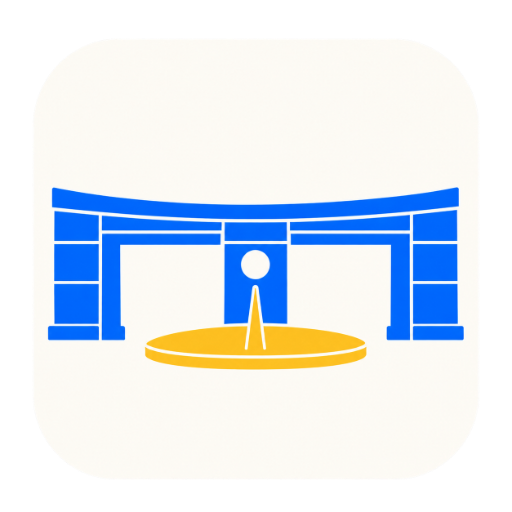

中国矿业大学
找不到认证页面时，填写浏览器中的校园网认证地址。
当前网络使用的认证服务器是：
请核对它与你浏览器中的校园认证地址一致。确认只保存地址；请再点击登录继续认证。
删除本程序中当前选中账号的保存记录？不会注销校园网账号，也不会退出当前登录。
学校通常在周日至周四23:30至次日07:00暂停学生网络认证，节假日可能例外。若学校当前允许认证，可仅在本次手动尝试；自动登录仍保留时段保护。